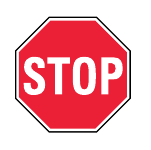
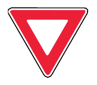
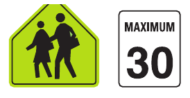
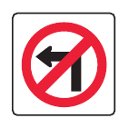
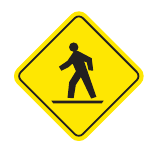
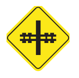

Choose a practice mode
Every run includes scenario-style sign questions using images cropped from the driver’s guide, plus specific questions about speeds, distances, times, and restrictions. Missed areas are shown at the end.
Practice Test
30 random questions with harder sign scenarios and exact-detail questions.



Quick 10
A shorter check that still includes sign scenarios and specific time/distance facts.



Choose an answer.
0/30